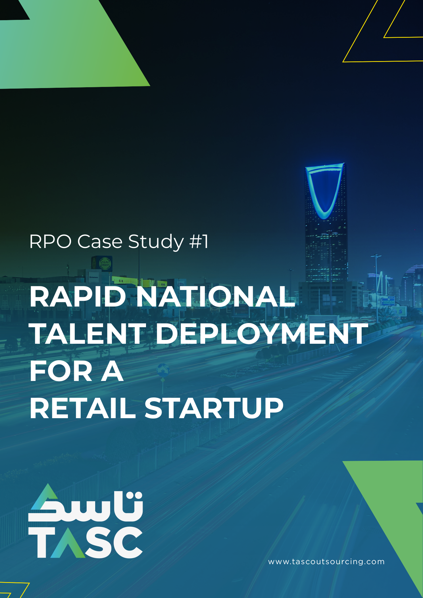

Case study 01 · Saudi Arabia
Building a Saudi workforce for a retail launch
A retail business needed a Saudi workforce ready for launch, with limited recruitment infrastructure in place.
205Saudi nationals onboardedSix weeks · Across 12+ cities
Read the case study about retailPDF · 5 pages · Opens in a new tab